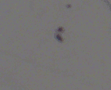

You will be presented with a random selection of the following types of imagery:
- Etched apatite grains comprising a stack of 16 transmitted light
images, focusing in and out of the sample:
click here
plus one reflected light image, which shows a surface view of the track pits:
click here
- The same collection of images for the mica print with induced
tracks from an irradiated apatite:
click here
- A stack of images from a dosimeter glass of known uranium
concentration, which is used to monitor the neutron fluence throughout
the sample stack:
click here
Whereas the micas and dosimeter glasses are relatively straightforward
to count, apatites can be more difficult. This is where automated
computer algorithms often fail and where the subjective judgment of
the human observer is particularly powerful. The whole purpose
of
geochron@home is to tap into the uniquely human ability to
distinguish fission tracks from other features. Your task as a citizen
scientist will be to make a judgment, to the best of your abilities,
as to whether or not linear features are fission tracks, based on the
following few examples:
|
This is a track. It has an opening (the 'etch pit') on the surface
of the grain which narrows down as you focus deeper into the
grain. |
|  | This is not a track, but a
crystal defect. This linear feature does not narrow down with depth
into the crystal. Sometimes you may find that crystal defects have a
preferred orientation which expresses itself as a preferential
alignment of tracks. In contrast, fission tracks occur in random
directions and should never have a preferential orientation.
|
| The long linear
feature running from the top left to the bottom right across this
image is a horizontally confined fission track (i.e. not a surface
track) and should therefore not be counted. Horizontal tracks are
useful for thermal history modelling but should not be used for the
age calculation. |
|
This is not a track but a (polishing)
scratch. Sometimes small specks of dust
may also look like surface tracks. However, they will not extend to
any depth within the image stack. |